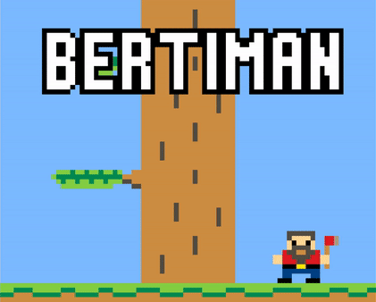
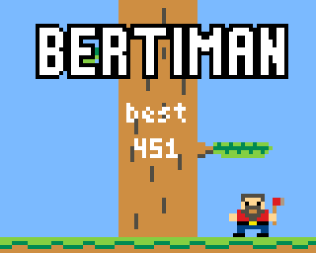
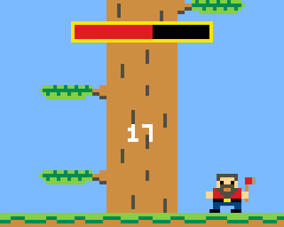
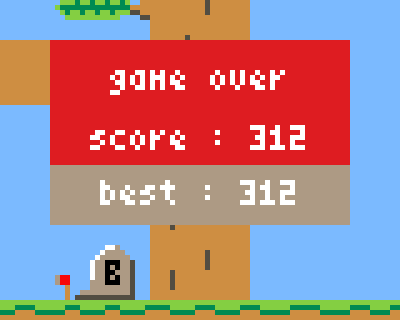

Bertiman
Pour mes premiers pas sur Gamebuino, Bertiman rend hommage au célèbre jeu Timberman ! (oui, ça sonne comme
une copie chinoise)
Une hache, un arbre géant, un bûcheron ravi ! Coupez le plus de bois possible, mais attention aux branches !
Activez le son et les lumières de la Gamebuino pour une expérience plus intense.
Bertiman est codé en C++ et utilise les fonctionnalités d'Arduino. La page du jeu n'est plus disponible car
le site Gamebuino a fermé, mais vous pouvez toujours télécharger le jeu sur ce site.
Quelques images du jeu



